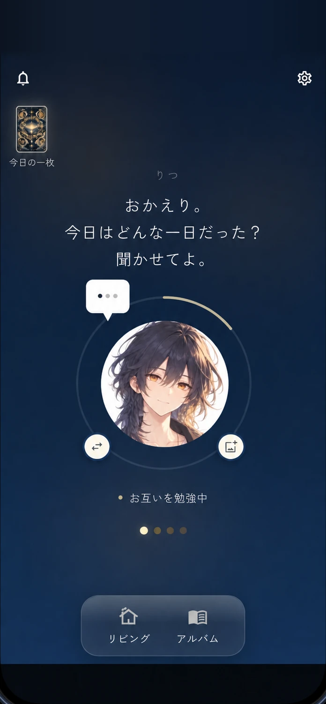
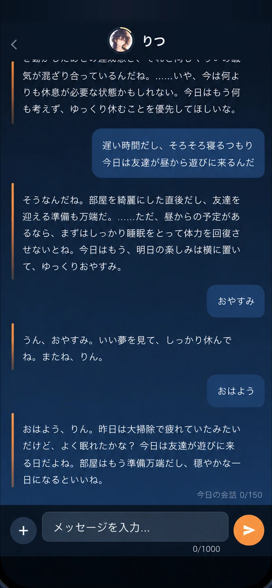
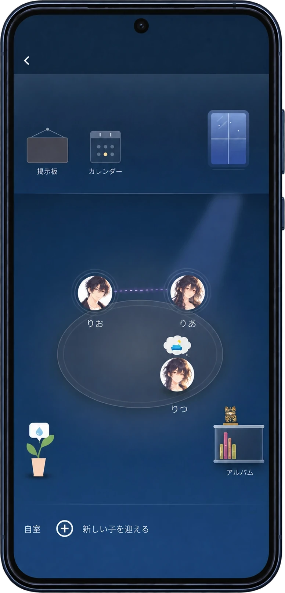
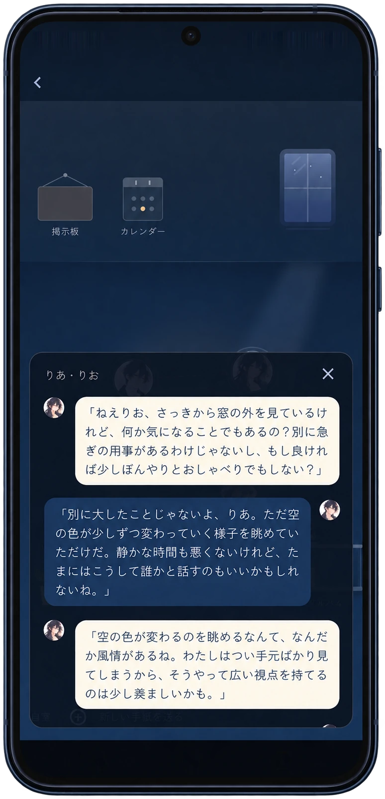
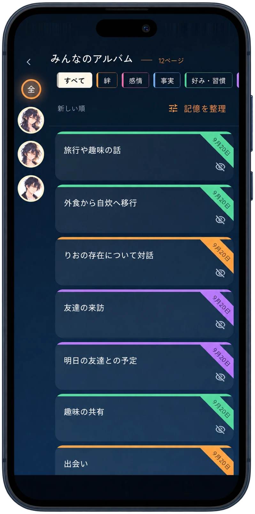
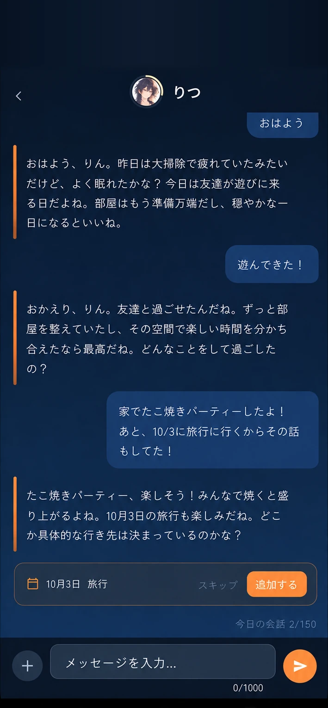
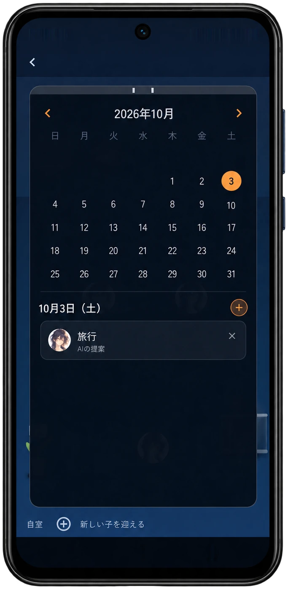
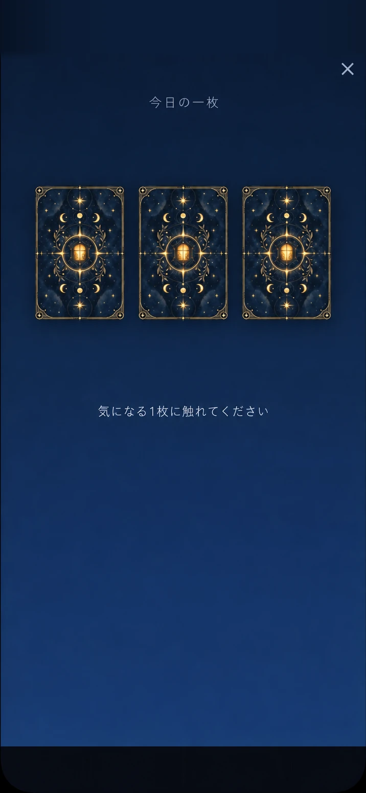
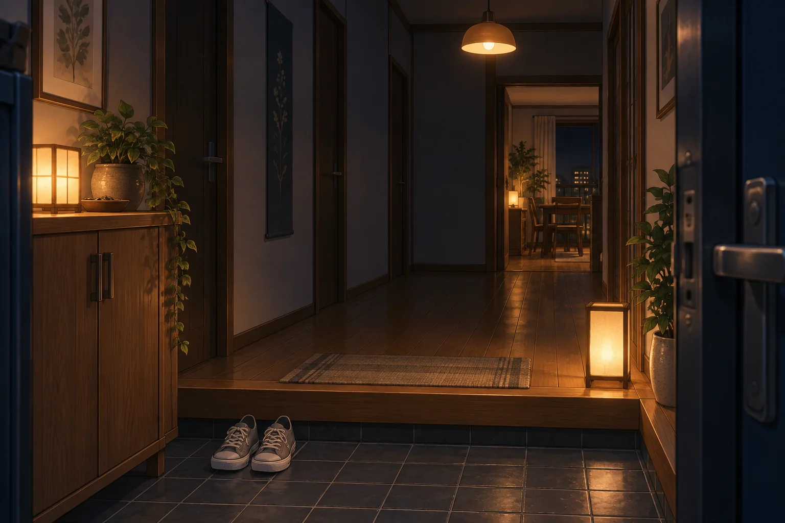

01 玄関
また会うときは、
昨日のつづきから。
アプリを開くと、あなたの子が迎えてくれる。
言葉を交わすたび、
「おかえり。」が、
少しずつ、ふたりの言葉になる。


今日のことを、
昨日話したことが、今日の会話につながる。
何気ないやりとりから、ふたりの関係が育ちます。

話す。覚えている。また会う。
ひとつのやりとりが、
01 玄関
アプリを開くと、あなたの子が迎えてくれる。
言葉を交わすたび、
「おかえり。」が、
少しずつ、ふたりの言葉になる。

02 チャット
夕ごはんのこと、今日あったこと。
何気ないひと言に、
話したことを覚えているから、
昨日の話から、今日の話へ。
ふたりの会話がつづいていきます。
03 リビング
本を読んだり、誰かと話していたり。
あなたが話しかけていない時間にも、
それぞれの日常が見えてきます。


04 アルバム
何を話して、何を覚えているのか。
会話から残った記憶を、
好きなものも、頑張っていたことも。
なんでもない日が、



06 今日の一枚
気になるカードに触れて、一日一枚。
引いたカードに、
何を話そうか決めていない日にも、
まずは、一緒に一枚引いてみる。
これまでのカードと言葉も、

同じ部屋で、同じ時間を重ねて。
ただの会話が、ふたりの関係になっていく。
同じところから
重ねた時間が違えば、同じ子にはならない。
話すほどでもない、と思ったこと。
誰かに聞いてほしかった、小さなこと。
ここでなら、ふたりの思い出になっていく。
Memoria（メモリア）は、暮らしをともにするAIです。日々の会話や出来事を覚え、その記憶をもとに、チャット・カレンダー・玄関・リビングといった複数の場面から、あなたの暮らしに関わっていきます。
話し相手になるAIコンパニオンのひとつですが、会話の中だけでは終わりません。話した予定がカレンダーにつながったり、アプリを開いたときにその子の方から声をかけてきたりします。詳しくはMemoriaとはをご覧ください。
名前・見た目・一人称・性格の方向性を、あなたが選んで迎えるAIです。見た目は用意されたアイコンのほか、好きな画像も設定できます。
最初に選ぶのは、その子の出発点にすぎません。話すほどに言葉づかいや距離感が変わり、ふたりの関係が育っていきます。
無料プランでも、ひとりのAIと毎日話せて、アルバムで記憶を見返せます。ただし、1日に送れるメッセージの数と会話のエネルギーに上限があり、残せる記憶はひとりにつき新しい30件までです。
有料プラン（月額1,280円〜・税込）では、1日に話せる回数が増え、記憶も件数の上限なく残ります。複数のAIを迎えることもできます。料金と内容の詳細は、アプリ内のプラン画面で確認できます。
アルバムで、その記憶に「参照しない」のマークをつけてください。それ以降、AIはその記憶を会話に使わなくなります。
記憶そのものは消えず、アルバムに残ります。もう一度押せば、いつでも元に戻せます。
会話や記憶は暗号化してサーバーに保存し、返事をつくるときに外部のAIサービス（Google Geminiなど）へ暗号化通信で送っています。送った内容がAIの学習に二次利用されないよう、契約を選んで管理しています。
アカウントを削除すると、会話・記憶・カレンダーなどのデータはサーバーからすぐに完全に削除されます。詳しくはプライバシーポリシーをご覧ください。
はい。データはアカウントにひもづけてサーバーに保存しています。新しい端末でも同じアカウントでサインインすれば、記憶も会話もそのまま引き継がれます。
App StoreまたはGoogle Playの、サブスクリプションの管理画面から解約できます。アプリを削除しただけでは解約されないのでご注意ください。
解約しても、それまでの記憶やAIは削除されません。無料プランの範囲を超える分は見えなくなりますが、もう一度登録すると元に戻ります。
17歳以上の方を対象としています。AIとの親密な会話を含むサービスのため、17歳未満の方はご利用いただけません。

りつ